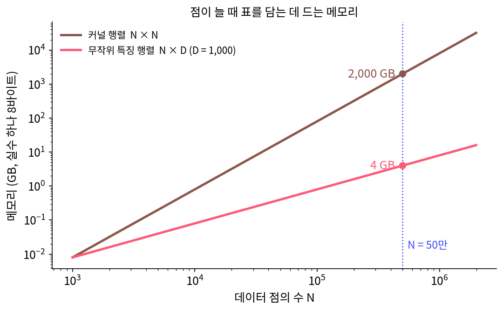
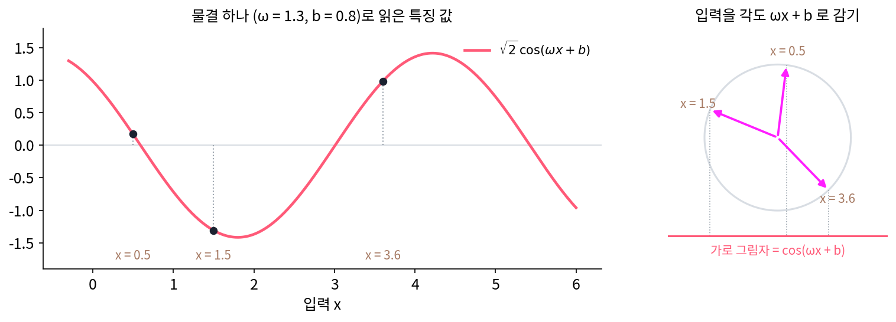
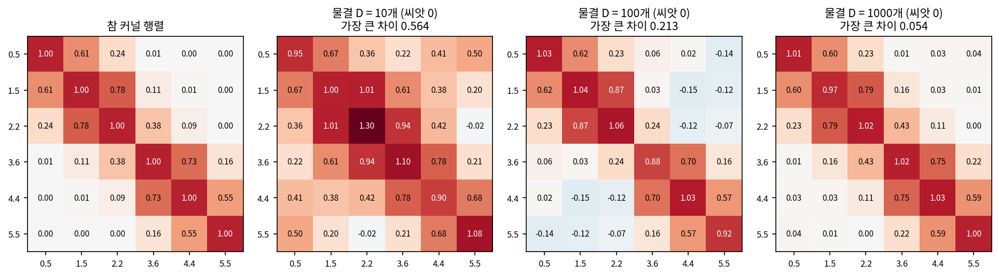
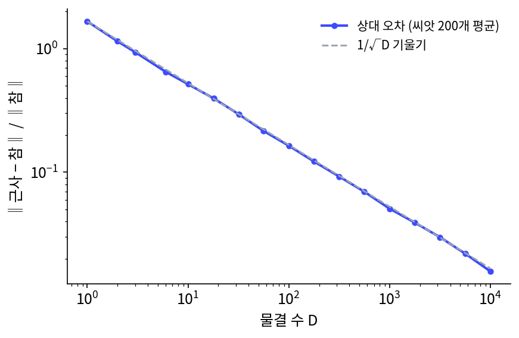
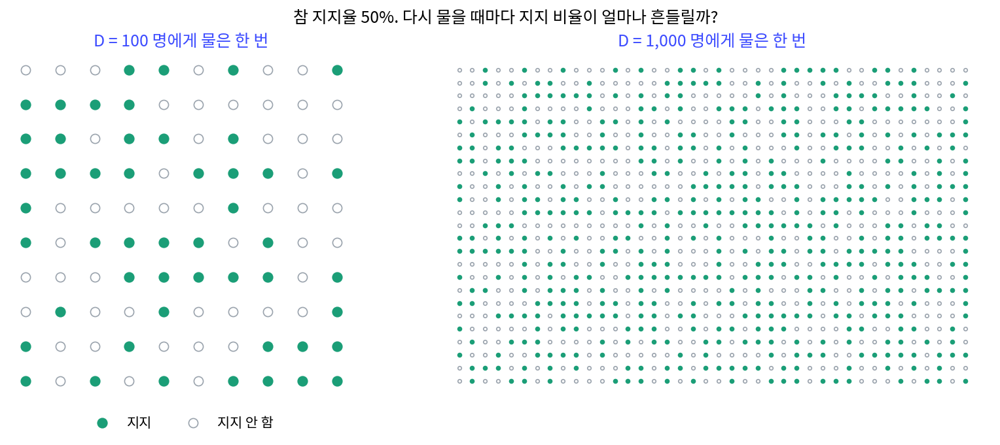
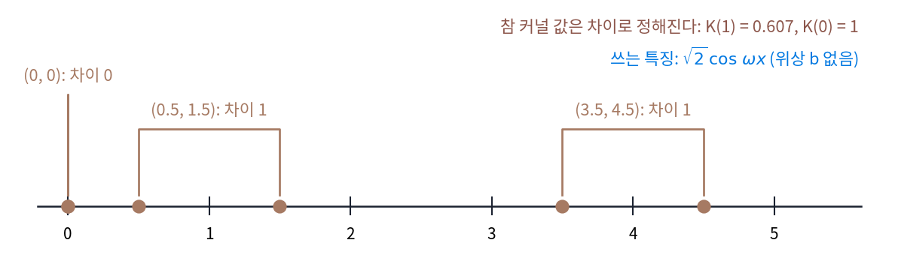
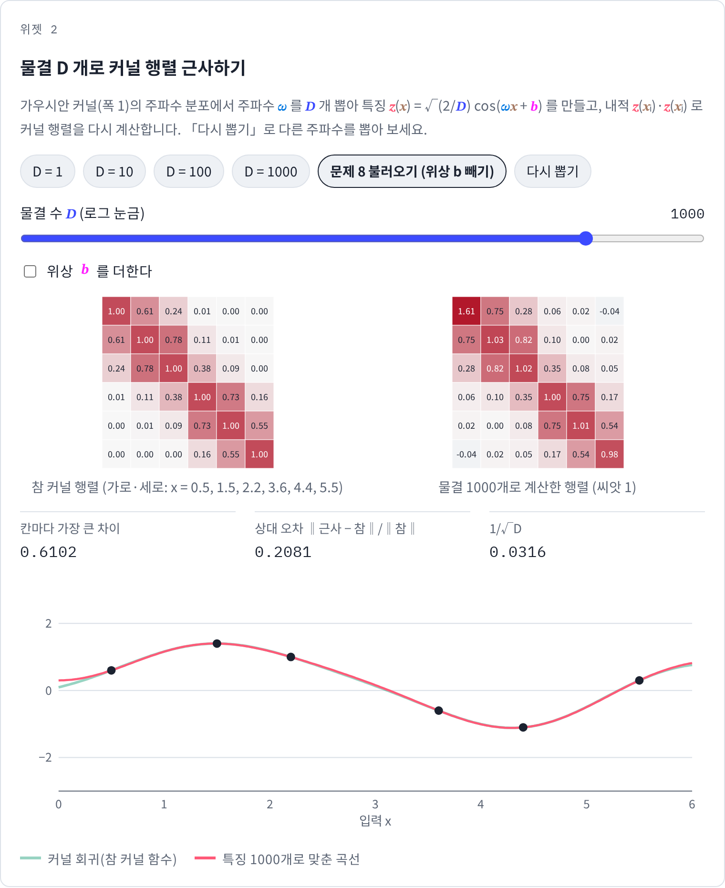
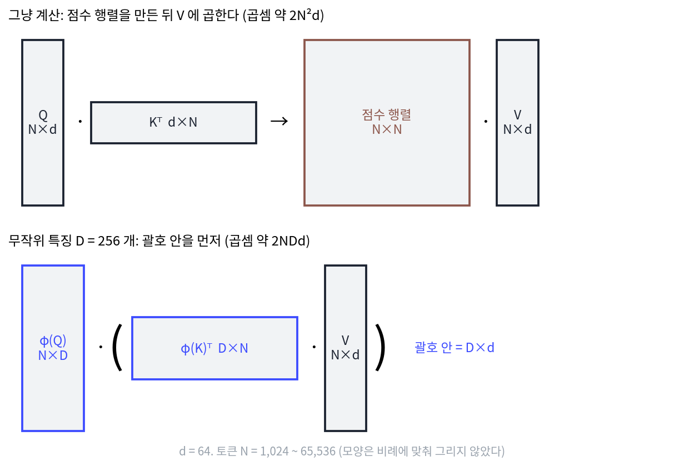

랜덤 푸리에 특징: 주파수 분포에서 물결을 뽑아 특징으로
커널 함수는 특징 무한 개의 내적을 셈 한 번으로 바꿔 주지만, 그 대가로 데이터 점 둘씩의 표를 모두 만들어야 했다. 점이 50만 개면 표가 2,000 GB다. 특징을 몇 개만 직접 만들면 표가 필요 없지만, 가우시안 커널의 특징은 무한 개라서 앞에서부터 끊으면 원점에서 먼 점이 틀렸다. 몇 개를 고르되 어디서나 고르게 맞는 방법은 없을까?
보흐너 정리가 길을 보여 준다. 가우시안 커널은 주파수 분포 p(ω)로 물결을 섞은 것, 다시 말해 주파수를 그 분포에서 뽑았을 때 물결 cos ωΔ의 평균이다. 평균은 샘플 몇 개의 평균으로 추정할 수 있다. 큰 수의 법칙(독립인 샘플의 평균은 샘플이 많을수록 참 평균에 다가간다)대로라면, 주파수를 몇 개 뽑아 물결 몇 개의 평균을 내면 커널 함수에 다가갈 것이다.
역사: 50만 개를 며칠씩 돌리던 시절
2007년 인텔 연구소(시애틀)의 알리 라히미(Ali Rahimi)와 칼텍의 벤 레흐트(Ben Recht)는 신경정보처리학회(NIPS)에 「대규모 커널 머신을 위한 무작위 특징(Random Features for Large-Scale Kernel Machines)」을 냈다. 논문 서론의 첫 문단은 그때의 사정을 이렇게 적는다. 서포트 벡터 머신 같은 커널 머신은 데이터가 충분하면 어떤 경계든 그려 내지만, 커널 행렬로 계산하는 방법들은 데이터가 늘면 감당하기 어려워진다. 「학습 예제가 50만 개인 데이터는 요즘 워크스테이션에서 학습에 며칠이 걸릴 수 있다.」 반면 선형 서포트 벡터 머신이나 정칙화 회귀는 특징이 적으면 훨씬 빨리 돈다.
그 무렵 커널 방법을 빠르게 하려는 시도는 주로 커널 행렬을 줄이는 쪽이어서, 칸을 몇 개 버리거나 줄을 몇 개만 골라 낮은 순위 행렬로 근사했다. 라히미와 레흐트는 행렬 대신 커널 함수 자체를 근사했다. 보흐너 정리로 커널 함수의 주파수 분포를 구하고, 거기서 주파수를 무작위로 뽑아 사인 물결을 특징으로 쓴 것이다. 그러면 학습은 빠른 선형 방법으로 하고, 새 점의 예측도 특징 몇 개와의 내적이면 끝난다. 이 논문은 10년 뒤 2017년 같은 학회에서 「시험의 시간 상(Test of Time Award)」을 받았다.
서론이 말한 「50만 개」를 메모리로 바꾸어 보면 두 방법의 차이가 드러나는데, 커널 행렬은 점 수의 제곱으로, 무작위 특징 행렬은 점 수에 비례해 자란다.


보흐너 정리가 1932년에 나왔으면, 주파수를 뽑아 특징으로 쓰자는 생각은 진작 나올 수 있지 않았어요?

1932년에 그 정리는 함수가 양의 정부호인지 가리는 판정이었어요. 그걸 「주파수 분포에서 뽑아 평균 낸다」로 읽으려면 어떤 처지에 놓여 있어야 할까요?

음, 커널 행렬이 너무 커서 못 쓰는 처지요. 점이 적으면 행렬로 풀면 되니까 굳이 무작위로 뽑을 필요가 없잖아요.

논문 서론이 「50만 개면 며칠」이라고 적은 게 그 처지예요. 그런데 그때 사람들은 먼저 행렬을 손봤어요. 문제가 행렬의 크기니까 칸을 버리고 줄을 골라 행렬을 줄이는 게 자연스러웠죠.

50만 × 50만이면 행렬만 2,000 GB였죠. 행렬을 아무리 줄여도 행렬에서 출발하는데, 라히미와 레흐트는 아예 함수 쪽으로 돌아간 거네요.

그런데 물결을 무작위로 뽑으면 뽑을 때마다 값이 달라질 텐데, 몇 개를 뽑아야 커널 행렬과 믿을 만큼 가까워져요?
물결 하나로 재고, 물결 D 개로 평균 내기
주파수 ω를 가우시안 커널의 주파수 분포(폭 ℓ = 1이면 표준 정규분포)에서 하나 뽑고, 위상 b를 0에서 2π 사이에서 고르게 하나 뽑는다. 입력 x를 각도 ωx + b로 감아 원에 올리고, 가로 그림자를 √2배 해서 특징 하나로 쓴다. 두 입력의 특징을 곱하면 2 cos(ωx + b) cos(ωy + b) = cos(ω(x − y)) + cos(ω(x + y) + 2b)이다. 둘째 항은 b가 고르게 돌면 평균 0이고, 첫째 항은 ω에 대해 평균 내면 보흐너 정리대로 커널 함수다.

점 여섯 개 가운데 x = 0.5와 1.5의 칸(참값 0.607)을 물결 하나로 재면, 백만 번 뽑아 평균 0.608이 나오지만 한 번 뽑은 값의 표준편차는 0.836이다. 물결 하나는 평균은 맞지만 하나하나는 크게 틀리므로, 물결을 D개 뽑아 평균 내는데, 특징 벡터의 칸마다 1/√D를 곱해 두면 내적이 그대로 D개의 평균이 된다.
주파수 분포에서 물결을 무작위로 뽑아 만든 이 특징을 랜덤 푸리에 특징 (주파수 분포에서 뽑은 물결로 만든 특징 / random Fourier features)이라 한다. 점 여섯 개의 6 × 6 커널 행렬을 물결 D개로 다시 계산해 보자.
| 물결 수 D | 칸마다 가장 큰 차이 (씨앗 0) | 상대 오차 (씨앗 0) | 상대 오차 (씨앗 200개 평균) |
|---|---|---|---|
| 10 | 0.564 | 0.540 | 0.517 |
| 100 | 0.213 | 0.180 | 0.164 |
| 1,000 | 0.054 | 0.055 | 0.051 |
| 10,000 | 0.019 | 0.017 | 0.016 |
상대 오차는 근사 행렬과 참 행렬의 차이를 칸마다 제곱해 더한 뒤 제곱근을 내고, 참 행렬의 같은 크기로 나눈 값이다. D가 열 배가 될 때마다 평균 상대 오차가 3.15, 3.23, 3.22배씩 주는데, √10 = 3.16이니 상대 오차는 1/√D로 준다. 물결 10개면 멀리 떨어진 0.5와 5.5가 0.50만큼 닮았다고 나오고, 1,000개면 0.04로 참값 0.00에 가까워진다.


특징을 직접 만들었으니 회귀도 특징으로 할 수 있다. 물결 1,000개 특징으로 점 여섯 개를 맞추면, 0 ≤ x ≤ 6에서 커널 회귀 곡선과의 차이가 가장 큰 곳도 0.060이다. 물결 10개면 같은 차이가 1.136이다. 위젯에서 물결 수를 늘리며 오른쪽 행렬이 왼쪽 행렬을 닮아 가는 것을 보자.
ML에서: 무작위 특징으로 어텐션 점수 근사하기
트랜스포머의 어텐션은 질의 q와 열쇠 k의 닮은 정도를 exp(q·k/√d) 꼴로 잰 뒤 줄마다 합이 1이 되게 나눈다(소프트맥스). 이 지수 꼴도 커널 함수다. 그래서 길이 N인 글의 어텐션은 N × N 커널 행렬을 만들고 값 벡터에 곱하는 일이고, N이 길어지면 계산과 메모리가 N²으로 는다. 초로만스키(Krzysztof Choromanski)와 동료들의 Performer(「Rethinking Attention with Performers」, ICLR 2021)는 이 커널 함수를 무작위 특징의 내적으로 근사했다. 특징이 있으면 곱하는 순서를 바꿔 N × N 행렬을 만들지 않고 계산할 수 있다. 사인 물결 특징은 값이 음수가 될 수 있어 작은 점수를 근사할 때 분산이 컸고 학습이 불안정했으므로, 그들은 늘 양수인 특징을 서로 직교하게 뽑는 방법(FAVOR+)을 썼다. 계산이 얼마나 주는지는 아래 문제 9에서 센다.
문제 7. 여론조사 샘플 수
어느 후보의 참 지지율이 50% 일 때, 무작위로 D 명에게 물어 지지율을 추정한다. (가) D = 100, 1,000 일 때 추정값의 표준편차는? (나) 오차를 절반으로 줄이려면 샘플을 몇 배로 늘려야 하는가? (다) 랜덤 푸리에 특징의 상대 오차와 무엇이 같은가?

(가)는 한 사람 답의 분산이 0.5 × 0.5 = 0.25니까, D명 평균의 표준편차는 √(0.25/D)예요. 100명이면 0.05, 1,000명이면 0.0158이요. 모의실험(씨앗 7)으로 2만 번 돌려도 0.0503, 0.0158이 나와요. (나)는 오차가 반이면 샘플도 반… 아니, 두 배요.
표준편차가 √D에 반비례한다고 했죠. 0.05를 0.025로 만들려면 D가 얼마죠?
√D가 두 배가 돼야 하니 D는 네 배, 400명이요. 열 배 정확하게 하려면 백 배를 물어야 하네요.

(다)는 물결 하나가 사람 한 명이야. 물결 하나의 답 2cos(ωx + b)cos(ωy + b)는 평균이 커널 함수이고 표준편차가 커(x = 0.5, y = 1.5 칸에서 0.836), D개를 평균 내면 표준편차가 1/√D로 줄어. 물결 수를 열 배로 늘릴 때마다 상대 오차가 3.16배쯤씩 줄었던 거랑 같아.

학과 설문을 열 명에게만 돌렸다가 조교님께 「그걸로는 아무 말도 못 한다」는 말을 들었는데, 백 명으로 늘려도 세 배 남짓밖에 안 좋아지는 거였군요.
문제 8. 위상 b 를 빼면
랜덤 푸리에 특징에서 위상 b 를 빼고 √2 cos ωx 만 특징으로 쓴다(가우시안 커널, 폭 1). (가) ω 를 아주 많이 뽑아 평균 낸 2 cos ωx cos ωy 는 (x, y) = (0.5, 1.5), (3.5, 4.5), (0, 0) 에서 얼마인가? 참 커널 함수 값과 비교하라. (나) 왜 그런가? (다) b 없이 고치는 방법은? (위젯 2의 「문제 8 불러오기」로 근사 행렬을 보자.)

2백만 개(씨앗 8)로 평균 냈어요. (0.5, 1.5)에서 0.742, (3.5, 4.5)에서 0.606, (0, 0)에서 2.000이요. 참값은 0.607, 0.607, 1이에요. 가운데 것만 맞네요. 뽑은 수가 모자란가 봐요.
2백만 개를 평균 내면 표준편차가 0.001 아래예요. 뽑기의 우연으로는 0.742와 0.607의 차이를 설명할 수 없어요. 곱셈 공식으로 2 cos A cos B를 풀어 보면요?

cos(A − B) + cos(A + B)야. 그러니까 평균이 K(x − y) + K(x + y)가 돼. (0.5, 1.5)에서 0.607 + e−2 = 0.607 + 0.135 = 0.742. (0, 0)은 1 + 1 = 2. (3.5, 4.5)는 합이 8이라 e−32이 거의 0이라서 맞아 보였던 거고.

그래요. 차이만이 아니라 합에도 기대게 되니 평행이동 불변이 깨져요. 원점 근처에서만 틀리고 멀리서는 맞는 것도 그 때문이고요. 위상 b를 고르게 뽑으면 합의 항이 평균 0으로 지워져요.

(다)는 cos ωx와 sin ωx를 짝으로 넣으면 되겠어요. cos cos + sin sin = cos(ω(x − y))라서 합의 항이 아예 안 생겨요. 돌려 보니 (0.5, 1.5)와 (3.5, 4.5) 둘 다 0.607이에요.

화살표 eiωx의 실수 부분과 허수 부분을 둘 다 쓴 거네. 화살표 둘의 내적은 각도 차이만 남기니까.
위젯 2에서 문제 8 설정을 불러와, 원점에 가까운 입력끼리의 칸과 먼 입력끼리의 칸 가운데 어느 쪽이 참 행렬과 어긋나는지 확인해 보세요.

문제 9. 어텐션 점수를 무작위 특징으로
머리 하나의 성분이 d = 64 인 어텐션에서, 점수 행렬 QKᵀ 를 만들고 값 V 에 곱하는 데는 곱셈이 대략 2N²d 번 든다. 무작위 특징 D = 256 개로 근사하면 φ(K)ᵀV 를 먼저 계산하고 φ(Q) 에 곱해 대략 2NDd 번이다(특징 벡터를 만드는 곱셈은 세지 않는다). (가) 토큰 N = 1,024, 4,096, 16,384, 65,536 에서 두 방법의 곱셈 수의 비는? (나) N = 65,536 의 점수 행렬을 16비트로 저장하면 몇 GB 인가? (다) 어느 길이부터 무작위 특징이 이득인가?

(가)는 비가 2N²d / 2NDd = N/D라서 4, 16, 64, 256배요. (나)는 65,536² × 2바이트 = 8.59 GB예요. 머리 하나, 층 하나에만요.
(다)는요? 비가 N/D면 N이 D보다 짧으면 어떻게 되죠?

N = 128이면 0.5배라 오히려 두 배 느려요. 짧은 글에서는 그냥 계산하는 게 낫고, 글이 특징 수 256보다 길어질수록 이득이 커지네요.

커널 행렬 크기를 셌던 문제 3(데이터 점 50만 개면 행렬만 2,000 GB)이랑 똑같은 모양이야. 커널 행렬은 점이 늘면 N²으로 커지고, 특징은 N에 비례해. 거기서는 데이터 점이 N이었고 여기서는 토큰이 N인 거고. 대신 근사니까 D를 줄이면 점수의 표준편차가 1/√D로 커지겠지.
긴 보고서 맞춤법 검사를 문장 둘씩 다 맞대 보는 대신 단어 목록 하나와 맞대 보는 거네요. 목록이 문장 수보다 짧아야 빨라지고요.